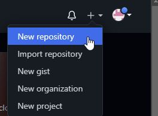
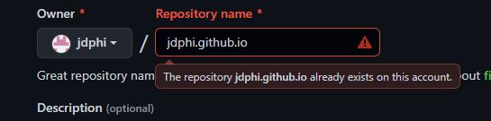
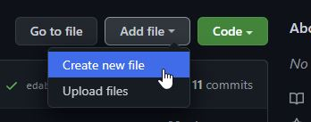
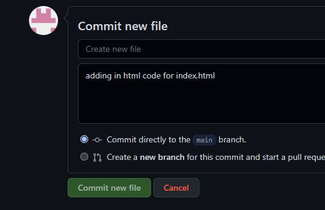

Creating a Github Page to show off your work!
- To make a github page, first navigate to pages.github.com. Here you will find some instructions and set up pieces to create your Github page.
- In another browser, head to github.com.
<<<<<<< HEAD
- Sign up or sign in with Github.
- Once logged in, click in the top right of the screen on the '+'.
- Click New Repository.

- In the Repository Name field, enter in [your username].github.io. The bracketed entry here will be replaced with the username that you created for Github. This needs to be spelled verbatim.
Note that this image shows that the name is already taken, as I have already created one for myself. You will see a green bubble with text if it is a valid name.

- Also set this to Public. This will allow others to see your Github page, by making it accessible to the internet.
- Click Create Respository.

- Once in the Respository, Click 'Add File' and then 'Create new file'.

- This will bring you into a file editor. Once here, give your file the name of 'index.html'.
- In the body of the file, enter in the following HTML code:
<!DOCTYPE>
<html>
<head>
<title>My Github Page</title>
</head>
<body>
Hello World!
<img src="my_picture.jpg"/>
</body>
</html>
- Click Commit new file at the bottom of the screen. Optionally, you can enter in notes for the change just above the Commit button. It may be a good idea to include some brief note on what you are creating with this Commit.

=======
- Sign up or sign in with Github
- Once logged in, click in the top right of the screen on the '+'
- Click New Repository
- In the Repository Name field, enter in [your username].github.com. The bracketed entry here will be replaced with the username that you created for Github. This needs to be spelled verbatim.
- Click Create Respository
- Once in the Respository, Click 'Add File' and then 'Create new file'
- This will bring you into a file editor. Once here, give your file the name of 'index.html;
- In the body of the file, enter in the following HTML code:
<!DOCTYPE>
<html>
<head>
<title>My Github Page</title>
</head>
<body>
Hello World!
<img src="my_picture.jpg"/>
</body>
</html>
- Click Commit new file at the bottom of the screen. Optionally, you can enter in notes for the change just above the Commit button. It may be a good idea to include some brief note on what you are creating with this Commit.
>>>>>>> edab0b60084c51b75dd67f49ee696e865aac3840
- One finished, you may wish to upload a picture of yourself for your Github page. In which case, take a picture of yourself, put it in your computer, and name it to 'my_picture.jpg'.
It is named this so that it will match with the image source that was specified in the html code.
- In your [username].github.io repository, Click Add file, then Upload files.
- Upload that image of yourself that you worked on previously. When the upload is complete, click Commit Changes.
- Now visit 'https://[username].github.com' and view your Github page! This should display your "Hello World!" text, as well as a picture of yourself.
<<<<<<< HEAD
=======
>>>>>>> edab0b60084c51b75dd67f49ee696e865aac3840
Troubleshooting steps
If you are having issues getting your Github page to display, try going into your Github repository that contains your files, and edit the README.md file that is within.
Give the README.md file some text and then commit changes to it. I had issues getting my Github repository to display until I completed this step.
<<<<<<< HEAD
=======
>>>>>>> edab0b60084c51b75dd67f49ee696e865aac3840